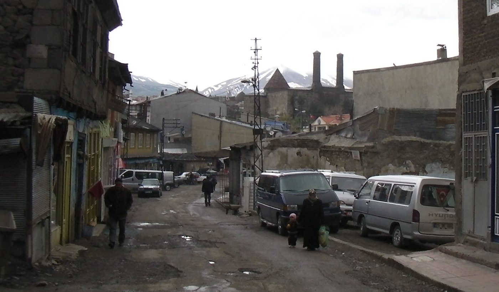
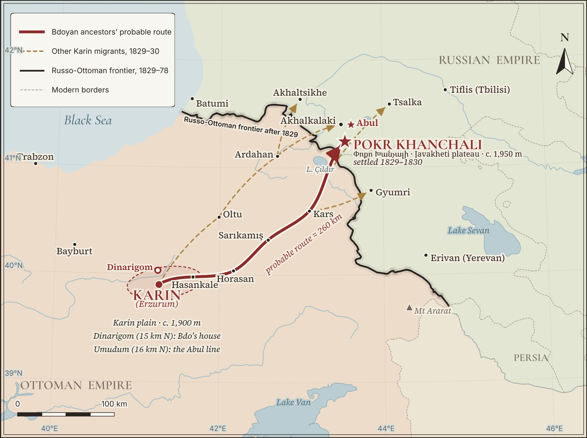
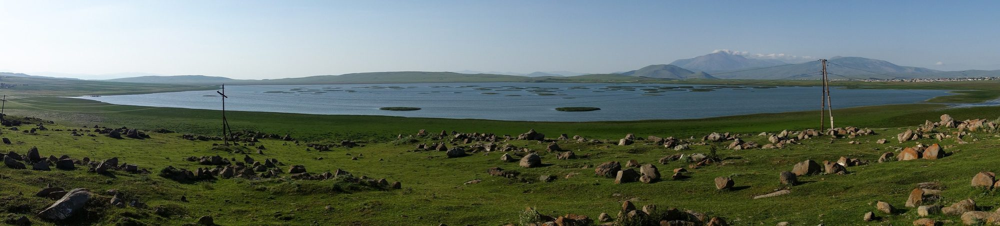
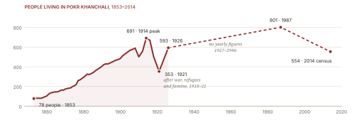
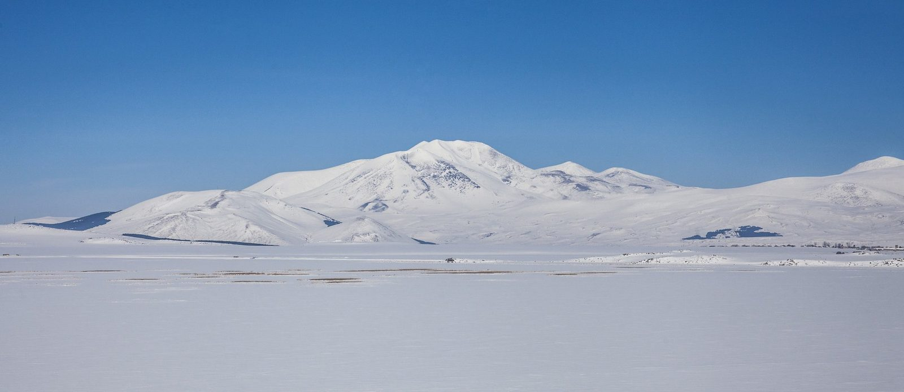
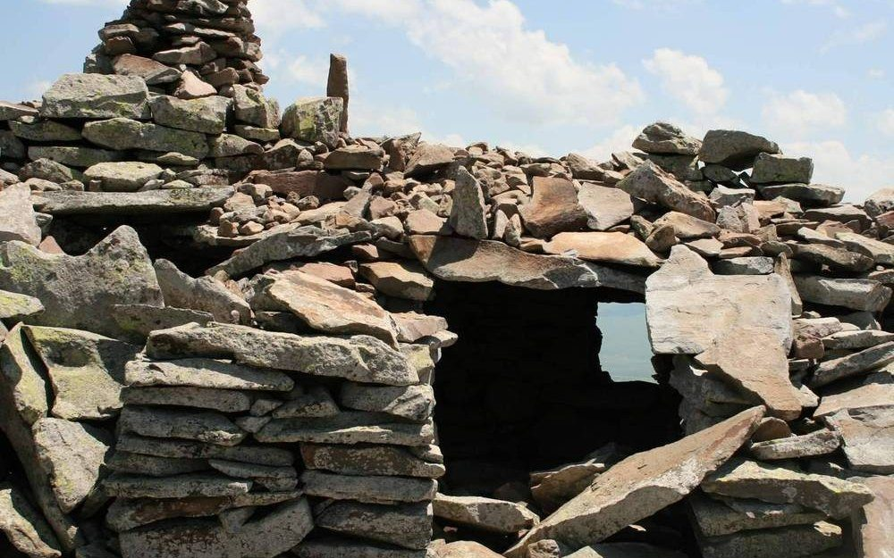
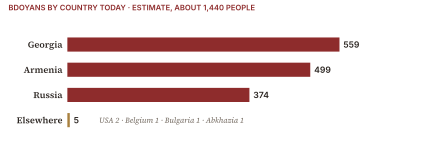
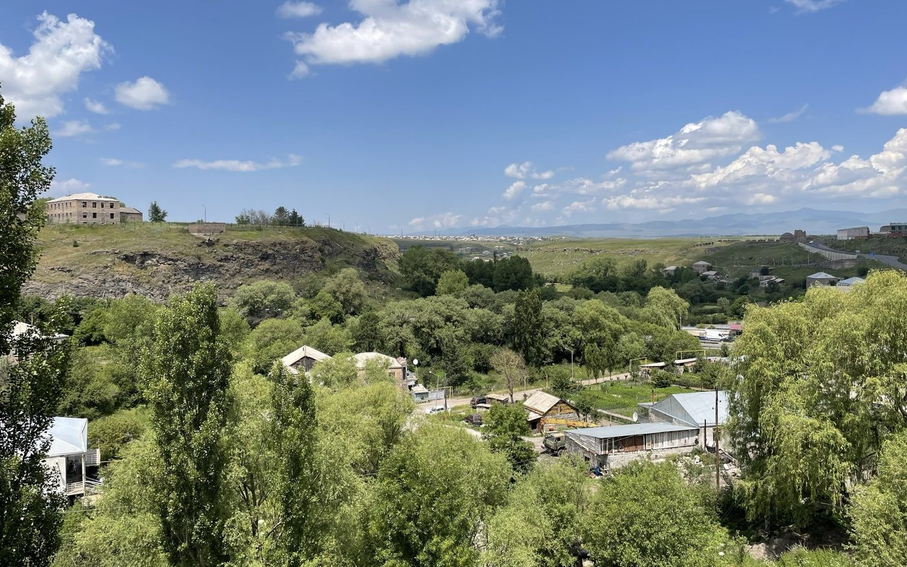
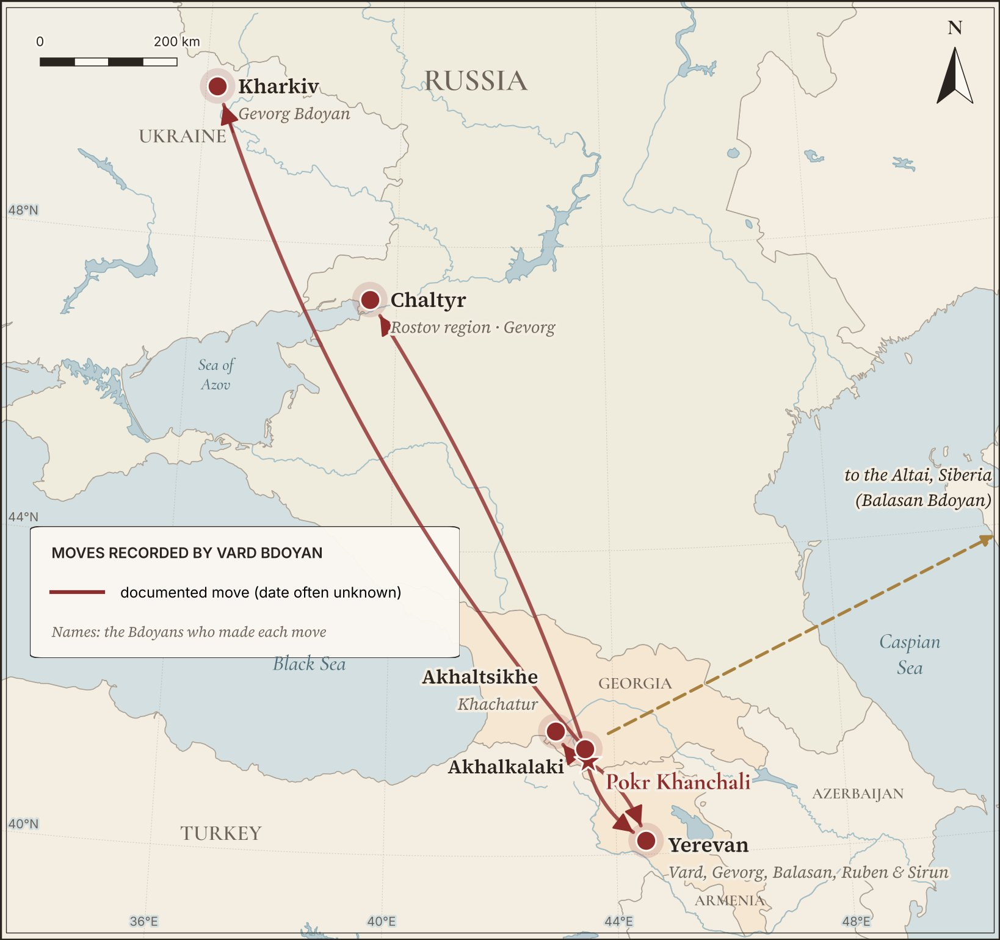
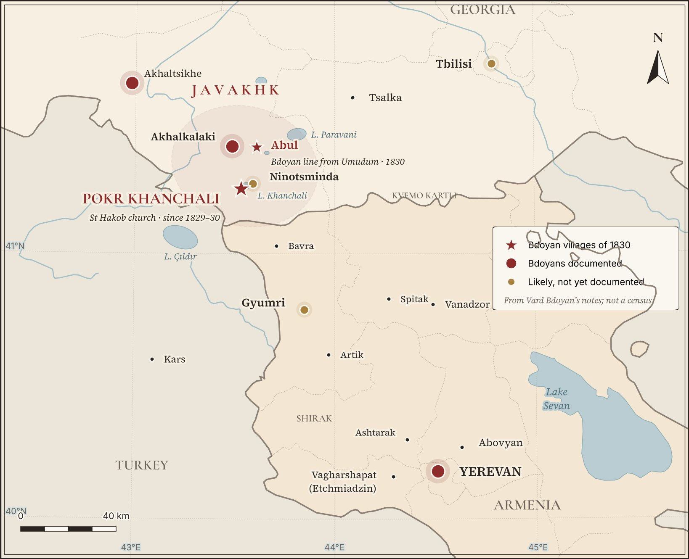

Bdo of the Karin Plain
Every Armenian surname is a small history. Bdoyan is the name of one man’s household, carried for more than two centuries across two empires and three modern countries.
The story begins on the plain of Karin — today’s Erzurum in eastern Turkey. It is a broad, almost treeless upland at close to 1,900 metres, ringed by mountains and drained by the headwaters of the Euphrates. For centuries it was the heart of Bardzr Hayk, “High Armenia”, and its fields were worked from Armenian farming villages; at the start of the nineteenth century there were roughly a hundred of them on the plain alone.2

Family tradition places the home of Bdo (Bedros) in one of these villages: Dinarigom ○, and the records now bear out that the family came from there ●. Samvel Karapetian’s survey of Javakhk, built on the church archives, states that the people of Pokr Khanchali descend from Armenians who moved there from Dinarigom village, Karin district, in 1829–1830, and places Dinarigom on the right bank of the Euphrates, 15 km north of Karin city; its Turkish name today is Myratgeldi.3 The village also appears, spelled Dinargom, in the 1909 list of the forty-eight Armenian villages of the Karin district — so the Armenians who stayed behind in 1829 went on living there for another eighty years.4
Who was Bdo?
No document yet found carries his name, and nothing written in his own hand survives. What we can say comes from the name itself and from how Armenian village society worked.
One thing is almost certain: Bdo was not the name he was baptised with. Armenian priests christened children with the names of saints and of the Bible — Petros, Hakob, Grigor, Baghdasar — and no one was baptised “Bdo”. In daily life, though, villagers called each other by short pet forms ending in -o, and the notes Vard Bdoyan took in Pokr Khanchali are full of them: Papo, Khnko, Gevo for Gevorg.5 Bdo is one of these.
The likeliest full name is Petros (Peter) — in the Western Armenian pronunciation of Karin, Bedros ◐. Hrachia Acharyan’s great Dictionary of Armenian Personal Names gives Peto and Petik as the usual pet forms of Petros.6 The Karin dialect belongs to the Western Armenian family, in which Petros is pronounced Bedros — so Peto sounded like Bedo.7 Written in the Eastern Armenian spelling used in the Caucasus, that sound is written with just three letters, B-D-O: Armenian script does not write the short vowel ə after a first consonant, and the name is said “Bə-do”. A Western Armenian family from Bitlis, the Bedoyans, likewise remember that their surname grew out of Bedrosian.8
Baghdasar has also been suggested, but a pet form of Baghdasar would normally keep its gh, which Bdo lacks. Only a register naming one of his sons as “son of Petros” — or of some other name — can settle it, and that is one of the first things the family is now looking for. Until then this book calls him Bdo (Bedros). Pet names like this were how neighbours actually spoke, and they often outlived the formal name.
More telling is that his name, rather than his father’s or his son’s, became the family’s for good. In the villages of the Armenian Highlands a family line was usually called after the head of household whose authority and number of descendants made that house stand out, and in Javakhk each kin quarter was named after the eldest of its clan.9 When the household divided, each branch still answered to that founder’s name. That Bdo became such a name-giver tells us he was the respected tanuter, the master of the house, of a large and lasting family.
Life in a patriarchal household
Bdo’s family would have lived as a gerdastan: married sons stayed under their father’s roof with their wives and children, so that three or four generations, often several dozen people, shared one hearth, one store of grain and one set of fields. Authority ran from the eldest man down; daughters married out into other houses, and brides came in.10
This is not guesswork borrowed from elsewhere. It is the way of life that Bdo’s own descendant, the ethnographer Vard Bdoyan, spent his career describing (see Chapter IV). He showed that such great households survived across the Armenian Highlands right up to the late nineteenth and early twentieth centuries, and that the villages themselves were built in clustered quarters of joined houses — the physical shape of clan loyalty and of communities that had to defend themselves.11
Dinarigom gives us a living picture of such a house. In 1959 Vard Bdoyan wrote down the memories of a man from that very village whose father’s household had held thirty-three people.12 His description of a Dinarigom house speaks of the same scale: one long building with four gomasenyak — the raised winter rooms built inside the cattle barn, where the family spent the cold months beside its animals.13
On the Karin plain that life meant spring ploughing with heavy wooden ploughs drawn by teams of oxen, wheat and barley harvested in a short summer, flocks taken to the uplands, and long winters when people and animals sheltered in the same half-sunken stone buildings for warmth.14 It was a hard, close-knit and self-reliant world. In 1828 it was overtaken by war.
Notes (14)
- The form “Bdoyents” is used in Bdoyan, Ethnography and Folk Art of Javakhk, 91, 575, 730. ↩
- Wikipedia, “Monastery of Saint Minas of Kes”, on the Armenian villages of the Erzurum plain before 1829. ↩
- Karapetian, Javakhk, 530 and note 1. ↩
- Soviet Armenian Encyclopedia, vol. 5, “Karin” (district). ↩
- Bdoyan, Ethnography and Folk Art of Javakhk, 683, 730. ↩
- Acharyan, Dictionary of Armenian Personal Names, vol. 4, entry “Petros”. ↩
- Armenian Historical Grammar project, “Classical Armenian phonology” (Western Petros [bedros]); Armenian Wikipedia, “Karno barbar”. Vard Bdoyan’s dialect texts from Javakhk use the Western present “kə tesni”, “he sees”: Bdoyan, Ethnography and Folk Art of Javakhk, 414. ↩
- Houshamadyan, “Bedoyan Collection — Athens and Nea Erythraia”. ↩
- Bdoyan, Ethnography and Folk Art of Javakhk, 150; summarised by R. Gharibyan, ibid., 21. ↩
- On the Armenian great family: Nahapetyan, “A Great Benefactor”, summarising Vard Bdoyan’s work; Bdoyan, Ethnography and Folk Art of Javakhk, 161–186. ↩
- Nahapetyan, “A Great Benefactor”; Bdoyan, Ethnography and Folk Art of Javakhk, 148–153. ↩
- Bdoyan, Ethnography and Folk Art of Javakhk, 707 (note to the legend of the Khachapayt spring). ↩
- Ibid., 183, 201. ↩
- General description after Bdoyan, Ethnography and Folk Art of Javakhk, chapters on farming, herding and dwellings. ↩
The Great Exodus, 1829–1830
Between the end of 1829 and the summer of 1830, tens of thousands of Armenians left the Karin plain behind. Among them were the sons and grandsons of Bdo (Bedros).
In the Russo-Turkish War of 1828–1829 the Russian Caucasus army under General Ivan Paskevich swept into the Ottoman borderlands. Kars fell in the summer of 1828, and on 24 July Paskevich stormed Akhalkalaki, followed by Akhaltsikhe; in the summer of 1829 the army entered Erzurum itself.3 For the Armenians of Karin, who had welcomed and supplied the Russian troops, it seemed that Christian rule had arrived to stay.
It had not. By the Treaty of Adrianople, signed on 14 September 1829 (2 September in the Old Style calendar used in Russia), Russia kept the districts of Akhalkalaki and Akhaltsikhe — the region Armenians call Javakhk — but handed Erzurum, Kars and Bayazet back to the Sultan.4 Fearing reprisals, and encouraged by the Russian authorities who wanted settlers for their new frontier lands, the Armenians of the province chose to leave with the withdrawing army.
The emigration was led by the Armenian prelate of Erzurum, Archbishop Karapet Bagratuni (1779–1856), and it used a right written into the treaty itself: Article 13 allowed the inhabitants of the returned lands to move freely to the other empire. The Ardahan villages left at the end of 1829; the people of Erzurum, Basen and Khnus followed in the summer of 1830.5 Whole villages packed what they could onto ox-carts — grain, tools, bedding, livestock, the vestments and books of their churches — and moved north-east in columns over the mountain roads toward Kars and the new Russian frontier. In Javakhk the heavy two-wheeled carts of Karin stayed in use for decades.6
For the people of Dinarigom and their neighbours, the road led to the high, half-empty plateau of Javakheti, around the lakes of Khanchali and Paravani. Decades of border warfare had left much of it thinly settled, and the Russian administration directed the newcomers there to farm it.7 The villages of the Karin plain scattered across that plateau side by side: Dinarigom’s families founded Pokr Khanchali; people from Umudum, which lay at almost the same distance north of the city (16 km), settled Abul and Majadia; those of Hindzk went first to Sazel near Akhaltsikhe and then to Mets Khanchali, across the lake from Pokr Khanchali.8
Vard Bdoyan describes how they did it. By old custom, he writes, the Armenians resettled by forming kin quarters: “they acquired not only single houses but whole quarters”, and it was thought unacceptable for a kinsman to build apart from the rest of his clan.9 A family that had lived as one quarter in Karin rebuilt itself as one quarter in Javakhk.
The move was not just a change of country. Karin and Javakheti lie at almost the same height — about 1,900 metres against the 1,930–1,980 metres of Pokr Khanchali10 — with the same short summers, deep snows and open, windswept fields. The migrants brought their ploughs, seed, customs and dialect, and much of that life could be lived again on the new plateau. That continuity is one reason the families of Javakhk kept their Karin identity so strongly, and why the Karin dialect is still spoken there today.11
Village to village
Karapetian’s survey records, for many Javakhk villages, the exact Karin village their founders came from.12 Taken together they show the plain north of Karin re-forming itself on the Javakheti plateau, one community at a time.
| From the Karin district, 1829–30 | To Javakhk | Notes |
|---|---|---|
| Dinarigom · 15 km north of Karin | Pokr Khanchali | The Bdoyans’ village; St Hakob church |
| Umudum · 16 km north of Karin | Abul · Majadia | Hakob Bdoyan came to Abul in 1830; 29 Umudum families founded Majadia |
| Hindzk | Mets Khanchali | By way of Sazel, near Akhaltsikhe |
| Khotorjur and Kan | Pokr Gyondura | |
| Gaghtarij | Alatuman | |
| Ortiz | Burnashet | 15 families moved on to Tsalka in 1844 |
| Yerkan Mansur | Korkh | Some later founded Nor Korkh in Tsalka |
| Snkarij | Kulikam |

Notes (12)
- Wikipedia, “Monastery of Saint Minas of Kes” (about 10,000 families, 75,000 people); Armenian Wikipedia, “Javakhk” (about 80,000). ↩
- Melkonyan, Javakhk, 14–15. ↩
- Melkonyan, Javakhk, 14 (Akhalkalaki and Khertvisi, July 1828). ↩
- Melkonyan, Javakhk, 14. ↩
- Melkonyan, Javakhk, 14–15, and note 2 to the documents (Bagratuni’s dates). ↩
- Bdoyan, Ethnography and Folk Art of Javakhk, 140. ↩
- Karapetian, Javakhk, 18–20. ↩
- Karapetian, Javakhk, 29–30 (Abul; Umudum), 360 (Majadia), 375 (Mets Khanchali), 530 (Pokr Khanchali). ↩
- Bdoyan, Ethnography and Folk Art of Javakhk, 148; our translation. ↩
- Karapetian, Javakhk, 530. ↩
- Wikipedia, “Karin dialect” (spoken today in Shirak and in Akhalkalaki, Akhaltsikhe and Ninotsminda). ↩
- Karapetian, Javakhk, 29 (Abul), 42 (Alatuman), 126 (Burnashet), 304 (Korkh), 308 (Kulikam), 360 (Majadia), 375 (Mets Khanchali), 527 (Pokr Gyondura), 530 (Pokr Khanchali). ↩
A New Home on Lake Khanchali
On the southern shore of a shallow upland lake, the migrants from Karin founded the village that would be the Bdoyans’ home for the next two centuries: Pokr Khanchali.

Pokr Khanchali — “Little Khanchali”, to distinguish it from its larger neighbour Mets Khanchali across the lake — stretches along the southern shore of Lake Khanchali, within 200 metres of the water, on the Javakheti volcanic plateau in today’s Georgia, close to the Armenian border. Its people, Samvel Karapetian writes, descend from the families who came from Dinarigom in 1829–1830 ●, and it has been an Armenian village ever since. For a time it had a few Turkish neighbours as well: a document of 1870 counts eight houses of Tarakama Turks (96 people), there were six in 1884, and in 1918 they left for Turkey.1
The Bdoyan quarter
We can see exactly where the Bdoyans lived. In 1950 Vard Bdoyan climbed the rocky hill called Kurch above the village and sketched it house by house, leaving out everything new, so as to record Pokr Khanchali as it had stood in the 1910s. The village was divided into an upper and a lower half, veri mayla and tsatsi mayla, and each half into groups of joined houses, every group the quarter of one or more related families. The old Armenian word for such a quarter, tagh, Vard notes, had already been forgotten in Karin: the settlers called it a mahla, and named it after the eldest of the clan.3
The Bdoyans held one block of five adjoining houses at the end of the first group of the lower quarter, beside the Vardanyans and the Yesoyans: the houses of Harutyun, Grigor, Anton and Davit, Mesrop and Zakar Bdoyan ●.4 It is the kin quarter in its plainest form — the descendants of one house still living wall to wall eighty years after the migration.
Bdoyents Papo and the first mill
Vard also preserved the name of the family’s leader in the new village. In the 1830s, he writes, the first water-mill of Pokr Khanchali was built by Bdoyents Papo — “Papo of the Bdoyans” — the nahapet, or patriarch, of the Bdoyans of the village ●. Water was scarce on the slope of the hill called Atorik where he built it, so it turned only one millstone, but it went on working long after him. When it had come down to Papo’s great-grandsons, the Ayvazyans built a handier mill closer to the village, and a village song teased the Bdoyans about their old one. In 1918 raiders wrecked both mills, and the villagers had to take their grain to the mills of Dilif.6
Papo is the earliest Bdoyan known by name. As head of the family in the first years after 1830, he belonged to the generation of Bdo’s sons or grandsons ◐; his great-grandsons were most likely the men of Vard’s sketch ◐. “Papo” is itself a pet name, so his baptismal name is still to be found.
Counting the village
Every year the diocese asked each parish how many souls it had, so the village can be followed almost year by year. The 78 people of 1853 had become 147, in thirteen houses, by 1866, and 691 by 1914.7 Then came catastrophe. In 1918 the Ottoman army overran Javakhk; the villagers fled, and hunger and disease followed the refugees. By 1921 only 353 people were left.8 Anush Bdoyan’s husband, Mesrop Bdoyan — very probably the owner of house 31 ◐ — fell fighting in the Dilif pass in May 1918, and his brother Khnko was killed in the village in January 1919.9 Pokr Khanchali recovered to 593 people by 1926 and to 801, in 215 houses, by 1987. In the Second World War 113 of its people went to the front, and 58 did not come back.10 The 2014 census counted 554 inhabitants, 99% of them Armenian.11

The church of St Hakob
A village of Karin Armenians was organised around its church. Surb Hakob (St James) is mentioned as early as the 1850s, and in the 1860s it was still a modest wooden building.12 In 1875 the villagers rebuilt it, with finely dressed stone on the west front and hewn stone on the other walls. It is a hall of 16.8 × 10.3 metres with walls 90 cm thick; inside, two pairs of round columns carry the double-pitched roof. The only door is in the west wall, and the font, cut from a single block of stone, is set into the north wall.13 A parish school was already working in 1865, with one teacher and ten pupils.14
Two inscriptions record the rebuilding. The one on and around the tympanum over the door says, in our translation, that in the days of Catholicos Gevorg the church of Pokr Khanchali “was built and dedicated to Saint Hakob” and blessed by Archbishop Grigor Sakinyan of Akhaltsikhe; its worn last lines include the name of Father Vardan. The second, carved south of the door, says that the church was consecrated “through the efforts and the honest earnings of my dear people” on the feast of the Holy Cross of Varag, 28 September 1875.15
The records also name people who served it. Father Vardan Movsisyan was one of its priests from the 1860s to the 1880s — very probably the Father Vardan of the inscription ◐, and the man most likely to have written down the baptisms, weddings and burials of the Bdoyans in those decades.16 Karapet Khoperyants taught in the parish school in 1875, and at the start of the twentieth century the church held a capital of 257 roubles 69 kopeks in silver.17 Around the church lies a cemetery with gravestones of the nineteenth and twentieth centuries, and the village also keeps a memorial to the fedayi commander Gevorg Chavush (1870/71–1907).18
That church matters to anyone tracing the family. For almost ninety years, from the 1830s to the Soviet period, its priests wrote down every baptism, marriage and burial in the village. Those registers are the most direct written trail from today’s Bdoyans back to the families who arrived in 1830; the companion research handbook shows where they are kept. The gravestones around the church are a second record, carved in stone.
The surname becomes official
In Karin, people were known by their own name, their father’s name and their house. Under Russian rule the authorities began to list every household, its head and his sons in registers, censuses and family lists. Over the course of the nineteenth century the old house-names hardened into fixed surnames written on every document. That is how “Bdo’s people” became, permanently and officially, the Bdoyan family.
The names themselves were older than the records. Summing up Vard Bdoyan’s findings, the editor of his Javakhk book, Rafayel Gharibyan, notes that a kin quarter was usually called after the head of the clan, and that almost every clan that moved to Javakhk kept the name it had borne in Karin before the migration.21 The Russian clerks wrote down names that the families had brought with them.

A dialect carried from Karin
The settlers brought their speech with them. The Karin (Karno) dialect, once spoken from Kars to Baberd with Erzurum at its centre, survives today in Shirak and in Javakhk — in Akhalkalaki, Ninotsminda and their villages.23 When older people in Pokr Khanchali speak the village tongue, they are still using the words of the Karin plain that Bdo knew.
Life in Pokr Khanchali followed the rhythm the families had known in Karin: grain and potatoes on the high fields, cattle and sheep, long winters, and the gerdastan household slowly giving way, by the early twentieth century, to smaller families. Into one of those families, in 1910, was born the man who would become the Bdoyans’ best-known son.
Notes (23)
- Karapetian, Javakhk, 530, citing Sbornik materialov dlya opisaniya Tiflisskoy gubernii (1870), 32; Ardzagank 1885, no. 3, 41; and N. Berdzenishvili. ↩
- Karapetian, Javakhk, 530; Armenian Wikipedia, “Pokr Khanchali” (2014 census). ↩
- Bdoyan, Ethnography and Folk Art of Javakhk, 150. ↩
- Ibid., 151–152 (houses 28–32). ↩
- Bdoyan, Ethnography and Folk Art of Javakhk, 91–92. ↩
- Ibid., 730 (note to the song “Qambakh ellin dzer jaghchnin”); the song itself, 575. ↩
- Karapetian, Javakhk, 530–531, from the files of fond 53 of the National Archives of Armenia; another source gives 608 for 1914 (Kavkazskiy kalendar na 1915 god, 195). ↩
- Karapetian, Javakhk, 29, 531; Melkonyan, Javakhk, 24–49. ↩
- Bdoyan, Ethnography and Folk Art of Javakhk, 683. ↩
- Karapetian, Javakhk, 531, citing A. Davtyan, Javakhk (1994), 101, and the village council registers. ↩
- Armenian Wikipedia, “Pokr Khanchali”. ↩
- Karapetian, Javakhk, 531; Armenian Apostolic Church in Georgia, “Pokr Khanchali – Surb Hakob church”. ↩
- Karapetian, Javakhk, 531. ↩
- Ibid., 531, citing fond 53, file 3848, and S. Khudoyan, Eastern Armenian Schools, 518. ↩
- Armenian texts in Karapetian, Javakhk, 531–532; translations ours. ↩
- Armenian Apostolic Church in Georgia, “Pokr Khanchali – Surb Hakob church”. ↩
- Karapetian, Javakhk, 531; Armenian Apostolic Church in Georgia, ibid. ↩
- Karapetian, Javakhk, 532. ↩
- Karapetian, Javakhk, 17–19. ↩
- Wikipedia, “Akhalkalaki uezd”. ↩
- Gharibyan, preface to Bdoyan, Ethnography and Folk Art of Javakhk, 21. ↩
- “Karno (Javakhk) dialect”, student project, 2021. ↩
- Wikipedia, “Karin dialect”; Armenian Wikipedia, “Karno barbar”. ↩
Vard Bdoyan, the Family’s Scholar
The best-known Bdoyan is the ethnographer and folklorist Vard Harutyuni Bdoyan — a son of Pokr Khanchali who spent his life recording exactly the kind of village world his ancestor Bdo (Bedros) had lived in.1
Vard Bdoyan was born on 4 March 1910 in Pokr Khanchali, into a farming family. He went to school in the village, finished the pedagogical college in Akhalkalaki in 1932 and taught in secondary schools from 1933 to 1937 before settling in Yerevan, where he completed the Pedagogical Institute by correspondence in 1943.2
He never lost touch with home: in 1961 he gave some 300 objects to the regional museum of Akhalkalaki, and he argued in print that Javakhk deserved a museum of its own.5
What Vard Bdoyan said
Vard Bdoyan’s ideas speak directly to the Bdoyan story. Here are six of them, drawn from his published work as summarised by the ethnographer Rafik Nahapetyan on his centenary in 2010, and from his Javakhk book.6
“There is no people whose later art of dress is not directly connected with the art of its ancestors.”
His conviction that the present is always tied to the ancestors runs through all his work. He traced each region’s costume back to the ancient peoples of the Armenian Highlands and rejected the claim that Armenian dress was simply borrowed from neighbours.
He traced the patriarchal great family to the rise of the father-centred clan, and showed how it survived through the feudal centuries before breaking up only in the late 19th and early 20th centuries — the very world Bdo’s family lived in.
He held that the words for a blood-kin group, aryunaru and tsegh, are native Armenian, while azg and tohm came from Pahlavi and Persian. Through these terms he followed the links between the wider clan and the family line.
The Armenian village of attached quarters and joined houses, which lasted into the 20th century, was in his view the product of two forces: clan tradition on one side and communities defending themselves under hostile rulers on the other.
His “theory of disguise” held that ancient beliefs did not vanish with Christianity but lived on in hidden forms. The female-shaped clay salt-cellars of Armenian homes, he argued, still carried the image of the old goddess Anahit, protector of mother and child.
“They acquired not only single houses, but whole quarters.”
Writing of the 1830s in Javakhk, he showed that the settlers from Karin rebuilt their villages clan by clan, and that a kinsman who built far from his clan’s quarter was frowned upon. Each quarter was named after the clan’s eldest — which is how “Bdo’s people” could carry his name from the Karin plain to Lake Khanchali.
The book that came out after him
For years it seemed that his most important work for the family would never appear. His archive held about 130 printer’s sheets ready for print, including two large studies of his homeland, The Ethnography of Javakhk and The Folklore of Javakhk; some 20 sheets of the folklore went to the Hayastan publishing house in 1986, the year he died, and were never printed there.7 Years later an editor handed the folklore manuscript — more than five hundred large pages, saved, as he puts it, by sheer chance from being burned — to the folklorist Rafayel Gharibyan, himself from Javakhk. Gharibyan traced the family and returned it; they entrusted him with the ethnography manuscript as well, and he spent years turning both into one book.8
It appeared in 2014 from Yerevan State University Press, with support from the Gulbenkian Foundation: The Ethnography and Folk Art of the Armenians of Javakhk, 752 pages, compiled, introduced and annotated by Gharibyan, with drawings by Vard himself.9 It is the source of the village sketch, the mill of Bdoyents Papo and the Dinarigom household in this book. It does not mention Bdo by name: the link to Dinarigom comes from the church archives quoted by Karapetian, and the founder’s name from the family.
The family in his notebooks
Vard Bdoyan began collecting at home. His very first recordings, in 1938, were made from an old storyteller and from “his relative” Gevorg Bdoyan of Akhalkalaki; in the summer of 1940 he worked in Pokr Khanchali itself, and among his best storytellers his editor names Varvare, Anush and Balasan Bdoyan. His notes on each of them, with birthplaces and dates, read like the first pages of a family register (see the box).11
Varvare Bdoyan, who married Harutyun Bdoyan of Pokr Khanchali in 1887, was a skilled dairywoman and potter who knew many proverbs. Vard was “son of Harutyun” and was born in 1910, and house 28 in his sketch is Harutyun’s, so she was very probably his mother ◐ — though the notes never say so, and a register will have to confirm it.12 Anush lost her husband Mesrop in the fighting of 1918, his brother in 1919 and both her sons, Grigor and Zavik, in 1941–1942; she turned her grief into verses that Vard wrote down and kept with deep respect.13
Notes (13)
- Figures in the strip above: Nahapetyan, “A Great Benefactor”; Bdoyan, Ethnography and Folk Art of Javakhk, 747. ↩
- Nahapetyan, “A Great Benefactor”. ↩
- Bdoyan, Ethnography and Folk Art of Javakhk, 747. ↩
- Career: Nahapetyan, “A Great Benefactor”. Doctorate (1970) and death: Bdoyan, Ethnography and Folk Art of Javakhk, 747; Armenian Wikipedia, “Vard Bdoyan”. ↩
- Nahapetyan, “A Great Benefactor”. ↩
- Quotations on dress, kinship words, the village and “disguise”: Nahapetyan, “A Great Benefactor”, with the Armenian original of the first quotation. On resettling: Bdoyan, Ethnography and Folk Art of Javakhk, 148. Translations ours. ↩
- Nahapetyan, “A Great Benefactor”. ↩
- Gharibyan, preface to Bdoyan, Ethnography and Folk Art of Javakhk, 6–7. ↩
- Ibid., title page verso (p. 2) and 7. ↩
- Bdoyan, Ethnography and Folk Art of Javakhk, 707, 711, 720, 683. ↩
- Gharibyan, preface, ibid., 8. ↩
- Bdoyan, Ethnography and Folk Art of Javakhk, 707 (Varvare), 151 (house 28), 747 (Vard, son of Harutyun). ↩
- Ibid., 683. ↩
One Ancestor, One Family
Every Bdoyan is a descendant of Bdo (Bedros). The name itself is the record: Bdoyan means “of Bdo”.
Common surnames like Grigoryan or Hakobyan arose independently in hundreds of places, from hundreds of unrelated men named Grigor or Hakob. Bdoyan is different.
- The name points to one man.Bdo was a nickname, most likely for Bedros (Petros). Countless men named Petros left sons who became Petrosyans; only in one known household did the nickname itself harden into the surname. Bdoyan is the name of one house, not a common pattern.
- One village, one house.The church archives confirm that Pokr Khanchali’s families came from Dinarigom on the Karin plain, where, the family remembers, “Bdo’s people” were a recognised house.1
- They moved together and stayed together.The family crossed the frontier as a group in 1829–1830 and put down roots in one village, Pokr Khanchali. There its patriarch, Bdoyents Papo, built the first mill, and eighty years later the Bdoyans still lived wall to wall as one kin quarter.2
- The name came from Karin.Clans that moved to Javakhk kept the names they had borne in Karin before 1829.3 Bdoyans are few — about 1,400 people today, almost all in Georgia, Armenia and Russia4 — and as far as is known, all trace their roots to Javakhk, and through it to the Karin plain.
So the Bdoyans are not simply people who share a name. They are one extended family, cousins of one another at greater or lesser distance, all descended in the male line from Bdo ○. His blood also runs in many families with other surnames, through the daughters of each generation who married into other houses.
The Bdoyans of Abul
Vard’s notes also reveal a second Bdoyan line in Javakhk. In Abul, a village 10 km east of Akhalkalaki, lived the singer and church clerk Smbat Bdoyan (1887–1963), whose grandfather Hakob Bdoyan had come to Abul in 1830 from Umudum, a Karin village 16 km north of the city — almost exactly as far out as Dinarigom. The Abul singers Ruben and Sirun Bdoyan, whom Vard recorded in Yerevan in 1965, still sang songs that had come with their family from Umudum.5
The family’s account and this record point the same way: back to one small stretch of the Karin plain north of the city. A great household there could easily have had a branch in a neighbouring village before 1829, through a son who took land or a brother who married into it, and in the family’s view — that every Bdoyan descends from Bdo — Abul’s Hakob was of Bdo’s line too. This is the one link in the family story that a document or a DNA test still has to confirm ○; the research handbook shows how.

About ten generations from Bdo
Counting about thirty years to a generation, a Bdoyan child born today stands nine or ten generations below the founder. The ladder below shows how those generations line up with history. Names other than Bdo, Papo, Harutyun and Vard are left for the family to fill in from records and memory; every name found so far is gathered in Chapter VI.
Generation dates are estimates. Vard Bdoyan’s exact place in the line (fifth, sixth or seventh from Bdo) can only be fixed from the records listed in the research handbook. Marks: ● confirmed by records · ◐ probable · ○ family tradition or estimate.
Notes (5)
- Karapetian, Javakhk, 530; family tradition. ↩
- Bdoyan, Ethnography and Folk Art of Javakhk, 151–152, 730. ↩
- Gharibyan, preface to Bdoyan, Ethnography and Folk Art of Javakhk, 21. ↩
- Surname-distribution estimate, surnam.es, “Bdoyan surname” (see Chapter VII). ↩
- Bdoyan, Ethnography and Folk Art of Javakhk, 720, 732, 734; Karapetian, Javakhk, 29 (Umudum, 16 km north of Karin). ↩
The Bdoyans We Know
Two centuries of the family can now be pinned to real people. This chapter gathers every Bdoyan named in the sources, shows how they connect, and marks how sure each link is.
Most of these names come from one place: the notes Vard Bdoyan wrote about the people who told him stories and sang him songs between 1938 and 1980, and the plan of Pokr Khanchali he drew in 1950.1 Together they give three groups: the Bdoyans of Pokr Khanchali, a branch in the town of Akhalkalaki, and the Bdoyans of Abul, whose ancestor came from Umudum.
Who’s who
Every person in the chart, with what the sources say and where they say it. Page numbers refer to Vard Bdoyan’s Ethnography and Folk Art of Javakhk unless another source is named.
| Name | Dates | Places | What we know | Source |
|---|---|---|---|---|
| Pokr Khanchali | ||||
| Bdo (Bedros) ○ | c. 1740–1780 | Dinarigom, Karin | Founder of the house; baptismal name probably Petros (Bedros) ◐ | Family tradition; Ch. I |
| Bdoyents Papo ● | fl. 1830s | Pokr Khanchali | Patriarch of the village’s Bdoyans; built its first water-mill | 730 |
| Harutyun ● | m. 1887 | Pokr Khanchali, house 28 | Husband of Varvare; father of Vard | 151, 707, 747 |
| Varvare ● | b. 1870 | Born Nardivan (Tsalka); Ghulalis; Pokr Khanchali | Married Harutyun in 1887; dairywoman, potter, storyteller; very probably Vard’s mother ◐ | 707 |
| Vard Harutyuni ● | 1910–1986 | Pokr Khanchali; Yerevan | Ethnographer and folklorist (Chapter IV) | 747; Nahapetyan |
| Grigor ● | — | Pokr Khanchali, house 29 | Householder in the 1910s | 151 |
| Khachatur, son of Grigor ● | b. 1888 | Pokr Khanchali; Mamzara; Akhaltsikhe | Farmer and miller; that his father was the Grigor of house 29 is likely ◐ | 711 |
| Anton and Davit ● | — | Pokr Khanchali, house 30 | Householders in the 1910s | 151 |
| Mesrop ● | † May 1918 | Pokr Khanchali, house 31 ◐ | Husband of Anush; killed fighting in the Dilif pass | 151, 683 |
| Anush, daughter of Matevos ● | 1880–1953 | Born Jigrashen; Pokr Khanchali | Wife of Mesrop; poet and storyteller | 683, 707 |
| Khnko ● | † Jan. 1919 | Pokr Khanchali | Brother of Mesrop; killed in the village | 683 |
| Grigor and Zavik ● | † 1941–1942 | — | Sons of Mesrop and Anush; died in the war years | 683 |
| Zakar ● | — | Pokr Khanchali, house 32 | Householder in the 1910s | 152 |
| Balasan ● | b. 1930 | Pokr Khanchali; Altai; Yerevan | Singer and dancer; parents not yet known | 720 |
| Akhalkalaki | ||||
| Tadevos ● | — | Akhalkalaki | Shoemaker; father of Gevorg | 707 |
| Gevorg ● | b. 1890 | Akhalkalaki; Kharkiv; Yerevan; Chaltyr (Rostov region) | Shoemaker and storyteller; Vard’s “relative” | 8, 707 |
| M. Bdoyan ● | 20th c. | Akhalkalaki | Photographer on Vard’s field trips | 28 |
| Abul, from Umudum | ||||
| Hakob ● | came 1830 | Umudum (Karin) → Abul | Grandfather of Smbat | 734 |
| Stepan ● | 19th c. | Abul | Moved to Abul; handed on the family’s long song to Smbat and Horomsima | 732 |
| Smbat ● | 1887–1963 | Abul | Farmer, church clerk and singer | 734 |
| Horomsima Avagyan, born Bdoyan ● | — | Abul | Paternal aunt of Ruben | 732 |
| Ruben ● | b. 1908 | Abul; Katnatu (1920s); Yerevan (1964) | Shepherd and singer | 720 |
| Sirun ● | b. 1908 | Abul; Katnatu; Yerevan | Wife of Ruben; singer | 720 |
What we still don’t know
The chart has four gaps that matter more than any others. Each can be closed with the records listed in the research handbook.
- Bdo’s baptismal name.Bedros (Petros) is probable but unproven. The earliest burial and baptism registers of Pokr Khanchali, and the first Russian household lists of the 1830s, may name him or his sons.
- Who Papo was.“Papo” is a pet name too. Was he Bdo’s son or his grandson, and what was his full name?
- The two missing generations.Between Papo and the five householders of the 1910s lie two generations with no names yet. The parish registers of the 1840s–1880s should supply them; the first step can be the record of Harutyun’s marriage in 1887, which should name his father.
- The Abul link.Were Hakob of Umudum and the Bdoyans of Dinarigom one family before 1829? A Y-DNA comparison between the two lines would answer it fastest.
Notes (1)
- Bdoyan, Ethnography and Folk Art of Javakhk, 8, 150–152, 683, 707–738. ↩
Where the Bdoyans Live Today
For a century after 1830 the family stayed rooted in two villages of Javakhk. In the twentieth century its members began to move — and today the Bdoyans are still, overwhelmingly, a family of Georgia, Armenia and Russia.
How many, and where
Surname-statistics services, which compile public registers and phone directories, estimate that about 1,440 people bear the name Bdoyan today. Some 559 of them live in Georgia, 499 in Armenia and 374 in Russia; only a handful are recorded anywhere else — two in the United States, one each in Belgium, Bulgaria and Abkhazia.1 These are estimates, not a count, but the proportions are clear: almost every Bdoyan still lives within a day’s journey of Javakhk or in the Russian cities where Javakhk families have worked for generations.

Moves the records show
Vard Bdoyan’s notes on his storytellers record where several Bdoyans went in the twentieth century. They are the first documented branches of the family outside Javakhk (Map 2):2
- Vard left Pokr Khanchali for the college in Akhalkalaki and then for Yerevan, where he lived and worked from the late 1930s until his death in 1986.
- Gevorg of Akhalkalaki, a shoemaker born in 1890, lived in Kharkiv (now Ukraine), in Yerevan and in the village of Chaltyr, near Rostov-on-Don in southern Russia.
- Khachatur, born in Pokr Khanchali in 1888, lived there, in Mamzara and in Akhaltsikhe.
- Balasan, born in Pokr Khanchali in 1930, lived in the village, in the Altai in Siberia, and in Yerevan.
- Ruben and Sirun of Abul moved with their family to Katnatu, a new village of the Bogdanovka (Ninotsminda) district, in the 1920s, and to Yerevan in 1964.

The wider pattern
These individual moves fit the paths taken by Javakhk Armenians in general. In the Soviet decades young people went to Yerevan to study and stayed for work. Others settled just across the border in Gyumri and the towns of Shirak, or in Tbilisi, the capital of their own republic. From the 1960s many Javakhk men went to work seasonally in southern Russia, and whole families followed them; after 1991, economic collapse pushed a new wave to Russia’s large cities.3 This general picture (Map 3) is a guide to where branches of the family may be found ○; each family can mark its own.
The quickest way to complete this chapter is from the family itself. If each branch notes where its members live today, the picture of the family can rest on facts rather than estimates; the research handbook includes a sheet for collecting them.


Notes (3)
- surnam.es, “Bdoyan surname”. The figures are modelled estimates, not a census; they are given to show proportions only. ↩
- Bdoyan, Ethnography and Folk Art of Javakhk, 707 (Gevorg), 711 (Khachatur), 720 (Balasan; Ruben and Sirun), 747 (Vard). ↩
- General pattern of migration from Javakhk: Melkonyan, Javakhk; Karapetian, Javakhk, 18–22. Not specific to the Bdoyans. ↩
How This History Could Be Written
Most Armenian families cannot follow one ancestor across two centuries and two empires. The Bdoyans can, for three reasons: the kind of name they carry, the work of one of their own, and the tools that have only recently put scattered records within reach.
1 · Bdoyan began as a clan name, not a surname
Before the nineteenth century Armenian villagers had no surnames in the modern sense. A man was known by his own name, his father’s name and the name of his tohm, the lineage or house he belonged to. That house name, the tohmanun, was taken from a founding ancestor and passed down the male line: Bdoyents, “Bdo’s people”.1 Only under Russian rule, when officials began to write every household into registers and lists, did these house names harden into fixed surnames.2
That history is what makes the Bdoyans traceable. A common surname such as Grigoryan was formed again and again from thousands of unrelated men called Grigor. A tohmanun names one house. Everyone born a Bdoyan therefore belongs, by the family’s own rule, to the line of one man, and the name stayed attached to one kin quarter of one village long enough for the first registers to catch it there. It also explains why the name is so rare (about 1,440 people) and so concentrated in Javakhk and the places its people moved to.3
2 · The work of Vard Bdoyan
The second reason is that the family produced its own ethnographer. Vard Bdoyan spent half a century recording how the Armenians of Javakhk lived, and he began at home. His Javakhk book, published in 2014, gives what no register does: the plan of Pokr Khanchali in the 1910s with the five Bdoyan houses side by side, the story of Bdoyents Papo and his mill, the custom by which the settlers of 1830 rebuilt whole kin quarters, and a note on every storyteller he recorded, with birth years, parents, marriages and moves.4 Most of the names in Chapter VI come from those notes. Without them the family’s story would begin with the first Soviet certificates.
His work also tells researchers where to go next. Every note cites a numbered field notebook, and his notes on where each family came from point to the right villages on the Karin plain, Umudum for the Abul line among them. The book that grew out of his archive is in effect the family’s first research guide.
3 · New tools
The third reason is recent. Twenty years ago the sources for this book were scattered across reading rooms in Yerevan, Tbilisi and Istanbul. Today many of them are a search away:
- Digital libraries. Vard Bdoyan’s 2014 book, Ashot Melkonyan’s history of Javakhk and Rafik Nahapetyan’s biography are free PDFs in the Pan-Armenian Digital Library; Samvel Karapetian’s village survey is on the RAA website; Acharyan’s dictionary of names is on the Internet Archive.
- Archive catalogues online. The parish index of the National Archives of Armenia, the FamilySearch microfilm catalogue and the metrical-book finder of the National Archives of Georgia show exactly which registers survive for Pokr Khanchali and where.
- Open pictures and maps. Photographs shared on Wikimedia Commons under open licences, and the public-domain map data of Natural Earth, made the illustrations possible without a photographer or a cartographer.
- Surname statistics. Services that compile public registers give a first estimate of how many Bdoyans live where.
- Artificial intelligence. An AI model, Claude, made by Anthropic, helped search these sources, read scanned Armenian books (including text in an old computer encoding that no longer displays correctly), translate and compare passages, draw the maps and charts, and set the pages. It does not replace the archives or the family’s memory: every fact in this book is tied to a source so that a person can check it.
None of these tools can read a register that has not yet been opened, or remember what only an elder remembers. The next chapter of this history will come, as the first one did, from the family itself.
Notes (4)
- On the clan (azg, tohm) and the house named after its eldest: Bdoyan, Ethnography and Folk Art of Javakhk, 148–152; Gharibyan, preface, ibid., 21. ↩
- See Chapter III, “The surname becomes official”. ↩
- surnam.es, “Bdoyan surname” (modelled estimate; see Chapter VII). ↩
- Bdoyan, Ethnography and Folk Art of Javakhk, 148–152 (village plan), 730 (Papo’s mill), 707–738 (storytellers). ↩